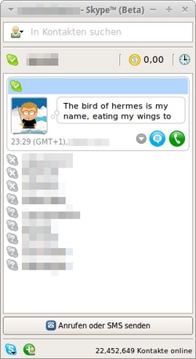
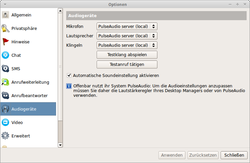

Skype
Archivierte Anleitung
Dieser Artikel wurde archiviert, da er - oder Teile daraus - nur noch unter einer älteren Ubuntu-Version nutzbar ist. Diese Anleitung wird vom Wiki-Team weder auf Richtigkeit überprüft noch anderweitig gepflegt. Zusätzlich wurde der Artikel für weitere Änderungen gesperrt.
Anmerkung: Dieses Skype-Programm wurde am 01.07.2017 eingestellt und wird danach nicht mehr funktionieren. Aktiv entwickelt und unterstützt wird von Microsoft Skype für Linux (aktuell nur als 64-bit-Version) und die Web-Version Skype for Web  .
.
Zum Verständnis dieses Artikels sind folgende Seiten hilfreich:
Skype ist eine unfreie Software von Microsoft zur Internet-Telefonie und der Vorgänger von Skype für Linux. Mit Skype ist es möglich, mit den Kontakten zu chatten, Dateien zu senden oder zu empfangen, zu telefonieren und auch Videotelefonate zu führen. Alle Daten werden bei Skype verschlüsselt übertragen.
Weitere Dienste (z.B. Anrufe in oder aus dem Festnetz oder das Verschicken von SMS) sind kostenpflichtig. Die Grunddienste sind jedoch kostenlos und bedürfen lediglich einer Registrierung. Man muss sich jedoch bewusst sein, dass Skype teilweise Techniken benutzt, die aus dem Filesharing-Bereich stammen. D.h., auch wenn man gerade nicht telefoniert, aber im Skype-Netzwerk angemeldet ist, werden Daten übertragen.
Zudem sind der Quelltext des Klienten und des Netzwerkprotokolls geheim – Skype funktioniert daher nicht mit anderen VoIP-Anwendungen, die auf Freie Standards setzen. Ebenfalls muss man achtgeben, wenn man Guthaben auf Skype einzahlt, um telefonieren zu können. Wenn das Guthaben des Zugangs mehr als 6 Monate nicht genutzt wurde, verfällt das Guthaben, bevor es vollständig verbraucht ist. Die registrierten Accounts bleiben allerdings weiterhin aktiv.

Installation¶
Skype befindet sich nicht in den offiziellen Paketquellen, sondern in der Paketquelle Canonical Partner. Diese muss zuerst hinzugefügt bzw. aktiviert [1] werden.
Nach dem Aktualisieren der Paketquellen kann folgendes Paket installiert [2] werden:
skype (Canonical Partner)
 mit apturl
mit apturl
Paketliste zum Kopieren:
sudo apt-get install skype
sudo aptitude install skype
Dieses Paket erfordert als Abhängigkeit das Paket skype-bin, das automatisch mitinstalliert wird. In skype-bin ist die eigentliche Software enthalten. Nach der Installation findet man anschließend im Anwendungsmenü (falls vorhanden) unter "Internet -> Skype" einen Programmstarter für Skype.
Nutzer eines 64-Bit Systems müssen ggf. Multiarch  mit folgendem Befehl aktivieren, da Skype 4.3 nur als 32-Bit Version vorliegt:
mit folgendem Befehl aktivieren, da Skype 4.3 nur als 32-Bit Version vorliegt:
sudo dpkg --add-architecture i386
Update von Skype 4.2 oder älter¶
Ende Juli 2014 wurde der Skype-Service so modifiziert, dass man sich mit alten Skype-Versionen nicht mehr anmelden kann. Die Unterstützung für ältere Skype-Versionen ist eingestellt worden , so dass nun Skype 4.3 oder neuer installiert sein muss. Ab Version 4.3 benötigt Skype außerdem PulseAudio, so dass speziell bei Lubuntu Probleme mit den Ton zu erwarten sind, da dort PulseAudio standardmäßig nicht vorinstalliert ist. Dies lässt sich leicht beheben, indem man pavucontrol nachinstalliert.
Falls Skype 4.2 oder älter – aus den Canonical Partner Paketquellen – installiert ist, helfen folgende Befehle weiter, um auf die neueste Version zu aktualisieren:
sudo apt-get --purge autoremove skype sudo apt-get update sudo apt-get install skype sudo apt-get -f install
Wenn weiterhin Probleme beim Anmelden auftreten, könnten die in diesem Thread genannten Vorschläge helfen.
Unity¶
Wer die Desktop-Oberfläche Unity einsetzt, steht vor weiteren Problemen. Es kann beispielsweise passieren, dass das Minimieren des Programmfensters nicht möglich ist. Ein Klick auf Beenden lässt das Skype-Icon im Unity-Launcher verschwinden, obwohl es nur minimiert wurde. Abhilfe schafft die Installation von Skype-wrapper (siehe auch Install Skype Wrapper in Ubuntu ).
Da sich dieses Programm nicht in den offiziellen Paketquellen befindet, muss hier zuerst ein "Personal Package Archiv" (PPA) [4] eingebunden werden. In diesem PPA ist skype-wrapper bis einschliesslich Ubuntu 14.04 verfügbar.
Adresszeile zum Hinzufügen des PPAs:
ppa:skype-wrapper/ppa
Hinweis!
Zusätzliche Fremdquellen können das System gefährden.
Ein PPA unterstützt nicht zwangsläufig alle Ubuntu-Versionen. Weitere Informationen sind der  PPA-Beschreibung des Eigentümers/Teams skype-wrapper zu entnehmen.
PPA-Beschreibung des Eigentümers/Teams skype-wrapper zu entnehmen.
Damit Pakete aus dem PPA genutzt werden können, müssen die Paketquellen neu eingelesen werden.
Nach dem Aktualisieren der Paketquellen kann folgendes Paket installiert werden:
skype-wrapper (ppa)
mit apturl
Paketliste zum Kopieren:
sudo apt-get install skype-wrapper
sudo aptitude install skype-wrapper
Eine weitere Möglichkeit ist die alternative Oberfläche SkypeTab , die alle Skype-Fenster in ein Fenster mit Reitern (Tabs) packt. Hier kann man in den Optionen einstellen, dass bei einem Klick auf Beenden Skype nur in den Unity-Launcher minimiert wird.
Registrierung¶
Ohne Registrierung eines Benutzerkontos ist die Nutzung von Skype nicht möglich. Die Registrierung ist relativ einfach. Hierzu die erforderlichen Daten wie Benutzername, Kennwort usw. eingeben. Es müssen alle mit einem * gekennzeichneten Felder ausgefüllt werden. Sofern die Nutzungsbedingungen für Skype akzeptabel sind und man diesen zugestimmt hat, lässt man das Skype-Konto erstellen. Wenn man das Passwort vergessen hat, kann man sich ein neues an die angegebene E-Mail-Adresse schicken lassen.
Einstellungen¶
Sprache¶
Skype steht in zahlreichen Sprachen zur Verfügung, alle sind im herunterzuladenen Programmpaket bereits integriert. Nach der Installation wird Skype automatisch mit der im System eingestellten Sprache gestartet.
Sollte man eine andere Sprache für Skype bevorzugen, so kann man die Sprache in den Optionen unter "Allgemein -> Sprache der Anwendung" ändern. Beim nächsten Start von Skype wird das Programm in der ausgewählten Sprache gestartet.

Audiogeräte¶
PulseAudio¶
Ab Skype Version 4.3 ist PulseAudio erforderlich. Ist der Sound-Server PulseAudio auf dem System installiert, was bei allen Ubuntu-Varianten mit Ausnahme von Lubuntu standardmäßig der Fall ist, so wird dieser automatisch von Skype benutzt. In den Audio-Einstellungen von Skype kann man dann nichts anderes mehr als "PulseAudio server (local)" einstellen. Die Auswahl der zu benutzenden Wiedergabe- und Aufnahmegeräte erfolgt über PulseAudio und nicht über Skype.
Informationen hierzu finden sich im Wiki unter PulseAudio. Die Audio-Einstellungen können jederzeit einfach über "Testklang abspielen" bzw. "Testanruf tätigen" getestet werden.
ALSA¶
Nur für den Fall, dass Skype in einer älteren Version als 4.3 genutzt wird und kein PulseAudio auf dem System gefunden wird, geht Skype den Weg direkt über ALSA. Hier können die Audiogeräte direkt in Skype eingestellt werden, über die die Telefonate ("Mikrofon" und "Lautsprecher") erfolgen sollen und über welches Gerät ein eingehender Anruf signalisiert wird ("Klingeln"). Es ist möglich, unterschiedliche Geräte auszuwählen, so kann man das Gespräch über ein Headset führen, und bei einem Anruf klingelt es über die Boxen des Computers.
Wählt man Geräte aus, so sieht man diese jeweils zwei mal, einmal als "Gerätename (plughw:id,0)" und einmal als "Gerätename (hw:id,0)". Der Unterschied besteht darin, wie das Gerät angesprochen wird. Generell benutzt Skype mittlerweile ALSA, um die Audioschnittstellen des Systems anzusprechen.
Über "plughw" passt ALSA das Audiosignal so an, dass das Audiogerät es verarbeiten kann. Verwendet man "hw", so übermittelt ALSA das Signal unverändert. Daher sollte man prinzipiell immer "plughw" benutzen, so sollte die Audio-Ein und -Ausgabe problemlos klappen.
Video¶
Hier kann man nun auswählen, welches Videogerät Skype nutzen soll. Außerdem kann man über "Test" ausprobieren, ob Skype mit der im System installierten Webcam auch zurechtkommt. Ein Videogespräch startet man dann anschließend wie ein normales Gespräch über Skype. Man ruft daher den Kontakt wie immer an. Im Gesprächsfenster findet man daraufhin eine hellblaue Schaltfläche. Klickt man diese an und wählt "Mein Video starten" aus, dann startet Skype die Videoübertragung, und der Gesprächspartner empfängt das Videobild.
Mit bestimmten Kameras lässt sich Skype auch in besserer Videoqualität ("HQ") nutzen. Details dazu im Artikel Skype/Skype HQ-Video.
Tipps¶
Headset¶
Zum Telefonieren empfiehlt sich auf jeden Fall der Kauf eines Headsets. Es gibt eine große Auswahl. Teilweise sind diese von Skype zertifiziert, dies ist jedoch eher als Marketinginstrument zu verstehen und nicht als Qualitätssiegel. Ein preiswertes Exemplar ist schon für unter 15 Euro zu bekommen.
Skype for Web¶
Ohne Installation kann dagegen die Webversion "Skype for Web" mit Chromium und der Internetadresse web.skype.com verwendet werden. Ergänzend kann ein neues Profil genutzt und ein Programmstarter ~/.local/share/applications/skypeweb.desktop angelegt werden:
[Desktop Entry] Name=Skype Web Comment=Skype Web application in a Chromium profile Comment[de_DE]=Skype als Webapplikation mit eigenem Chromium-Profil Exec=sh -c "mkdir -p $HOME/.local/share/skypeweb && GDK_BACKEND=x11 chromium --user-data-dir=$HOME/.local/share/skypeweb https://web.skype.com 1>/dev/null 2>/dev/null &" Terminal=false Type=Application Encoding=UTF-8 Categories=Network;Application;
Skype-Links aus Firefox aufrufen¶
Damit man Skype-Links aus Firefox heraus aufrufen kann, bedarf es eventuell eines Eintrages in den erweiterten Konfigurationsdateien von Firefox. Dort teilt man Firefox mit, wo sich der sogenannte „Action-Handler“ von Skype befindet. Der Action-Handler übergibt die nötigen Daten an Skype, so dass man Skype-Links ganz normal und benutzen kann.
Die nachfolgenden Schritte gehen davon aus, dass der Action-Handler von Skype unter /usr/local/bin zu finden ist. Um herauszufinden, ob und wo der Action-Handler installiert ist, muss man im Terminal [5]:
which skype-action-handler
eingeben, dies sollte einen Pfad zurückgeben, den man verwendet. Wenn kein Pfad zurückgegeben wird, ist der Pfad zum Action-Handler entweder nicht in der PATH-Variablen oder der Action-Handler nicht installiert.
Firefox öffnen
um den Konfigurations-Editor zu öffnen,
about:configin die Adresszeile eingebenden Scrollbalken benutzen, um zum Bereich
network.protocol... zu gelangenprüfen, ob dort ein Schlüssel
network.protocol-handler.app.skypeexistiertwenn der Schlüssel existiert, kann man ihn bearbeiten, falls nicht, muss man ihn erst erstellen. Dazu macht man einen Rechtsklick auf einen beliebigen Schlüssel und wählt „Neu → String“ aus dem Rechtsklickmenü
„network.protocol-handler.app.skype“als Schlüsselnamen angeben„/usr/local/bin/skype-action-handler“als Schlüsselwert angeben
Wenn man einen existierenden Schlüssel bearbeiten will, reicht ein Doppelklick auf die Zeile mit dem Schlüssel. Wenn es sich um einen booleschen Wert handelt, schaltet der Doppelklick zwischen true und false um, ansonsten öffnet sich ein Dialog mit einer Eingabezeile.
Gespräche aufnehmen¶
Skype-Gespräche können mit dem Programm Skype Call Recorder aufgenommen werden. Dabei werden die Formate MP3, OGG und WAV unterstützt. Da das Programm nicht in den offiziellen Paketquellen von Ubuntu enthalten ist, muss es von der Projektseite heruntergeladen und manuell installiert werden. Anschließend muss noch folgendes Paket installiert werden:
libssl0.9.8 (universe)
mit apturl
Paketliste zum Kopieren:
sudo apt-get install libssl0.9.8
sudo aptitude install libssl0.9.8
Indikator¶
Bei der Verwendung von Unity siehe Panel Applets aktivieren. Für die GNOME Shell gibt es die Erweiterungen Skype Integration und AppIndicator Support .
Offline-Kontakte ausblenden¶
Um in der Kontaktliste Kontakte, die offline sind, auszublenden bzw. wieder einzublenden, einfach Strg + N drücken.
Darstellung im Systemthema¶
Auf einem 64-Bit-System benötigt Skype für die Darstellung im Systemthema noch folgende Pakete:
gtk2-engines-murrine:i386
gtk2-engines-pixbuf:i386
mit apturl
Paketliste zum Kopieren:
sudo apt-get install gtk2-engines-murrine:i386 gtk2-engines-pixbuf:i386
sudo aptitude install gtk2-engines-murrine:i386 gtk2-engines-pixbuf:i386
Problembehebung¶
Audio¶
Kein Toneingangssignal¶
Symptom: kein Toneingangssignal bzw. extrem leise bei Nutzung von Pulseaudio.
Ggf. reagiert Skype nicht auf Toneingabe über Pulseaudio. Das äußert sich darin, dass Skype den Pulseaudiomixer für den Eingang immer wieder selber herunterregelt und somit das Mikrofon fast auf lautlos steht.
Das Problem lässt sich umgehen, wenn man in den Audioeinstellungen ("Audiogeräte") von Skype die "Automatische Soundeinstellung aktivieren" nicht auswählt, also die automatische Toneinstellung deaktiviert.
Siehe auch: PulseAudio zu Skype.
Abgehackter Klang sowie Verzerrungen in der eigenen Audioausgabe¶
Symptom: abgehackter Klang bei der Gegenseite (insbesondere bei 64-Bit-Systemen). Audioausgabe ist anfänglich stark verzerrt. Es kracht, rauscht und knackst. Auch kommt es zu Echos und Verzerrungen in der eigenen Audioausgabe, die aber nach ein paar Minuten verschwinden.
Um diesem Fall vorzubeugen, kann folgendes Vorgehen helfen. In der Datei /etc/pulse/default.pa sucht [5][6] man nach der Zeile
load-module module-udev-detect
und ersetzt sie mit
load-module module-udev-detect tsched=0
Danach muss PulseAudio neugestartet werden, um die geänderte Konfiguration zu übernehmen:
pulseaudio -k pulseaudio -D
Siehe dazu auch das Archlinux-Wiki .
Toneingabe funktioniert im Audio-Recorder, aber nicht in Skype¶
Bei diesem besonders bei Acer-Aspire-Notebooks auftretenden Problem wird das integrierte Mikrofon von Pulseaudio als Stereokanal erkannt, obwohl es nur ein Mono-Eingang ist. Die Folge ist, dass der Pegelmesser im Eingang-Reiter der Audio-Einstellungen nur minimal ausschlägt und Skype überhaupt keinen Ton aufnimmt.
Das Programm pavucontrol findet man im Dash unter "PulseAudio-Lautstärkeregler". Nun im Reiter "Eingabegeräte" den Schieberegler für "vorne rechts" ganz herunterregeln (ihn evtl. vorher mit einem  -Klick auf das Vorhängeschloss-Symbol freischalten). Nun sollten die PulseAudio-Pegelmesser deutlicher ausschlagen und Skype funktionieren.
-Klick auf das Vorhängeschloss-Symbol freischalten). Nun sollten die PulseAudio-Pegelmesser deutlicher ausschlagen und Skype funktionieren.
Bei Anruf klingelt es nicht¶
Wenn es bei einem Anruf nicht klingelt, der Ton aber sonst funktioniert, ist wahrscheinlich in PulseAudio (Klangeinstellungen) unter Klangeffekte die Warnlautstärke stummgeschaltet.
Klänge funktionieren nicht (mehr)¶
Falls nach dem Umtieg auf eine neue Ubuntu-Version (z.B. von 13.04 auf 13.10) keine Klänge mehr funktionieren ("Optionen -> Hinweise -> Ereignis testen"), soll man eine womöglich vorhandene alte Datei ~/.local/share/applications/skype.desktop löschen. Nach einem Skype-Neustart funktionieren die Klänge wieder.
Wenn man Skype über ein Skript bzw. einen Launcher oder beim Systemstart ("Anwendungen -> Systemwerkzeuge -> Einstellungen -> Startprogramme") starten möchte, soll man den folgenden Befehl:
env PULSE_LATENCY_MSEC=30 skype
statt skype nutzen, dann funktionieren die Klänge auch mit PulseAudio 4.0.
Video¶
Webcam hat einen Blaustich¶
Sollte unter "Optionen -> Video" ein Bild mit Blaustich erscheinen, kann dies womöglich an der Videoauflösung von Skype liegen. Diese beträgt standardmäßig 320x240 Pixeln. Mit Hilfe eines Editors [5] bearbeitet man die Datei ~/.Skype/SKYPEACCOUNTNAME/config.xml im Homeverzeichnis und fügt Folgendes in dem Bereich <lib>...</lib> hinzu:
1 2 3 4 | <Video> <CaptureHeight>480</CaptureHeight> <CaptureWidth>640</CaptureWidth> </Video> |
Anschließend muss Skype neu gestartet werden. Das Bild sollte nun in normalen Farben erscheinen.
Das Bild der Webcam ist zu dunkel¶
Skype hat keine eigene Möglichkeit, die Einstellungen der Webcam zu ändern. Stattdessen kann man hierzu guvcview nutzen, um die Einstellungen des Video-Gerätes systemweit anzupassen. Ist es installiert, kann es während der Verwendung von Skype mit:
guvcview -o
gestartet werden, um bpsw. die Helligkeit unmittelbar zu ändern.
Alternativ gibt es das Programm v4l2ucp , das ebenfalls diese Einstellungen modifizieren kann. Ab Version 1.3.0 kann man diese Einstellungen auch abspeichern und beim Neustart des Rechners automatisch wieder einlesen lassen.
Im Forum findet man eine Schritt-für-Schritt-Anleitung von Sterndeuter und die benötigten Dateien, um dieses Problem zu lösen.
Webcam gibt nur grünliches Bild aus¶
Es erscheint unter "Optionen -> Video" bei einem Klick auf das Testfeld nur ein grünliches Bild (siehe auch 260918 und Fehlerbehebung ).
Lösung: Laden der Bibliothek v4l1compat.so (siehe unten)
Webcam gibt nur in Skype kein Bild aus¶
Skype gibt beim Video-Aufruf (bzw. im Testbild) nur ein schwarzes Bild aus, die Kamera funktioniert aber mit einer anderen Applikation wie Cheese, camorama o.ä.
Lösung: Laden der Bibliothek v4l1compat.so (siehe unten)
Skype gibt Fehler auf dem Terminal aus - BadMatch (invalid parameter attributes)¶
Folgender Fehler wird auf dem Terminal ausgegeben:
X Error, request 42, minor 0, error code 8 BadMatch (invalid parameter attributes) X Error, request 42, minor 0, error code 8 BadMatch (invalid parameter attributes) [...]
Lösung: Laden der Bibliothek v4l1compat.so (siehe unten)
Es gibt auch andere BadMatch-Fehler, siehe unten.
Videobild steht kopf¶
Einige Kameras mit der (USB-)Bezeichnung 13d3:5130 IMC Networks in ASUS-Laptops sind schlichtweg auf den Kopf gedreht verbaut worden.
Lösung: Laden der Bibliothek v4l1compat.so (siehe unten)
Um die Lage auch für andere Kameras zu korrigieren oder die Kamera auch manuell anders einzurichten, gibt es mit der v4l1compat.so-Library auch die Möglichkeit, die Lage selbst mit einer zusätzlichen Variable einzustellen. Dazu muss vor die Variable LD_PRELOAD (siehe unten) eine weitere Variable LIBV4LCONTROL_FLAGS gesetzt werden, in der die Lage bestimmt wird:
LIBV4LCONTROL_FLAGS=0 # Keine Änderung
LIBV4LCONTROL_FLAGS=1 # Drehen um waagerechte Achse
LIBV4LCONTROL_FLAGS=2 # Drehen um senkrechte Achse
LIBV4LCONTROL_FLAGS=3 # Drehen um waagerechte und senkrechte Achse
LIBV4LCONTROL_FLAGS=[4,5,6,7] # Drehung um 90 Grad (und Kombinationen mit o.g.Flips)
Dann wird die Bibliothek v4l1compat.so geladen.
Lösung - Laden der Bibliothek v4l1compat.so¶
Skype nutzt die erste Version der Video-Schnittstelle für Linux (V4L), die systemweit durch eine erweiterte Version (Version 2, V4L2) ersetzt wurde. Skype kann allerdings mit einer Bibliothek betrieben werden, die es zur aktuellen Video-Schnittstellen kompatibel macht. Diese Bibliothek ist enthalten im folgenden Paket und muss ggf. installiert werden:
libv4l-0
mit apturl
Paketliste zum Kopieren:
sudo apt-get install libv4l-0
sudo aptitude install libv4l-0
Skype muss zusammen mit dieser Zusatz-Bibliothek gestartet werden. Dies geschieht, indem das Programm im Terminal gemeinsam mit der Umgebungsvariable LD_PRELOAD und der Bibliothek aufgerufen wird:
64-Bit:
LD_PRELOAD=/usr/lib/x86_64-linux-gnu/libv4l/v4l1compat.so /usr/bin/skype
32-Bit:
LD_PRELOAD=/usr/lib/i386-linux-gnu/libv4l/v4l1compat.so /usr/bin/skype
Siehe hierzu auch uname -m, um die Systemarchitektur zu ermitteln.
Das Aufrufen mit LD_Preload... scheint bei neueren Skype-Versionen von der Skype-Webseite nicht mehr nötig zu sein (getestet mit Ubuntu 14.04).
Hinweis:
In der Version Ubuntu 14.04 tritt bei 64-Bit-Versionen die folgende Fehlermeldung auf:
ERROR: ld.so: object '/usr/lib/x86_64-linux-gnu/libv4l/v4l1compat.so' from LD_PRELOAD cannot be preloaded (wrong ELF class: ELFCLASS64): ignored.
In diesem Falle muss die i386-Version von libv4l-0 nachinstalliert werden, der Pfad muss danach auf die 32-bit-Bibliothek weisen:
sudo apt-get install libv4l-0:i386 LD_PRELOAD=/usr/lib/i386-linux-gnu/libv4l/v4l1compat.so /usr/bin/skype
Dauerhafter Aufruf¶
Wer Skype oft nutzt oder nicht mit dem Terminal arbeitet, möchte nicht jedesmal diese lange Befehlszeile angeben. An mehreren Orten kann das automatische Laden dieser Datei eingerichtet werden.
Mit einer Umgebungsvariable lässt sich Skype auch über einen Launcher starten bzw. so in die Autostart-Programme einfügen:
64-bit:
env LD_PRELOAD=/usr/lib/x86_64-linux-gnu/libv4l/v4l1compat.so skype
32-bit:
env LD_PRELOAD=/usr/lib/i386-linux-gnu/libv4l/v4l1compat.so skype
Anschließend die Datei /usr/share/applications/skype.desktop kopieren:
cp /usr/share/applications/skype.desktop ~/.local/share/applications/skype.desktop
und ~/.local/share/applications/skype.desktop editieren. Die folgende Zeile:
Exec=env PULSE_LATENCY_MSEC=60 skype %U
mit dem LD_PRELOAD-Parameter erweitern, so dass sie wie folgt lautet (64-bit, 32-bit funktioniert mit dem entsprechenden Pfad):
Exec=env PULSE_LATENCY_MSEC=60 LD_PRELOAD=/usr/lib/x86_64-linux-gnu/libv4l/v4l1compat.so skype %U
Zum Schluß eine Script-Datei mit Pfad und Namen: /usr/local/bin/skype und dem folgenden Inhalt erstellen:
1 2 | #!/bin/bash LD_PRELOAD=/usr/lib/x86_64-linux-gnu/libv4l/v4l1compat.so /usr/bin/skype.bin "$@" |
(64-bit, 32-bit funktioniert mit dem entsprechenden Pfad)
Notwendige Rechte einstellen:
chmod a+x /usr/local/bin/skype
Der Aufruf der modifizierten Version von Skype erfolgt dann einfach mit
skype
Die Webcam wird aktiviert, aber kein Bild ist sichtbar¶
Startet man Skype aus der Konsole und folgende Fehlermeldung erscheint:
X Error, request 132, minor 18, error code 8 BadMatch (invalid parameter attributes) X Error, request 132, minor 18, error code 8 BadMatch (invalid parameter attributes) X Error, request 132, minor 18, error code 8 BadMatch (invalid parameter attributes) [...]
,
kann folgendes Abhilfe schaffen:
export XLIB_SKIP_ARGB_VISUALS=1 skype
Andere BadMatch-Fehler siehe oben.
Sonstiges¶
Skype-Symbol erscheint nicht im Panel¶
Hier sind zwei Varianten zu unterscheiden: Wenn Skype nie im Panel erscheint oder wenn Skype zwar wie gewünscht startet, beim Systemstart jedoch nicht im Panel erscheint.
Skype erscheint nie im Panel¶
Als erstes müssen folgende Pakete Installiert werden:
sni-qt
sni-qt:i386
mit apturl
Paketliste zum Kopieren:
sudo apt-get install sni-qt sni-qt:i386
sudo aptitude install sni-qt sni-qt:i386
Falls das nicht reicht, ist die Anzeige im Panel für nicht authorisierte Programme unterdrückt. Um Skype für das Panel zu autorisieren, kann bis einschließlich Ubuntu 12.10 folgender Befehl benutzt werden (bei neueren Ubuntu-Versionen wirkungslos):
gsettings set com.canonical.Unity.Panel systray-whitelist "['Skype']"
Symbol erscheint nur nach dem Start nicht im Panel¶
Wenn Skype zu den Startprogrammen hinzugefügt wurde, kann es vorkommen, dass Skype vor dem Panel startet und somit nicht im Panel erscheint. Um dieses Problem zu umgehen, kann ein Shell-Skript angelegt werden, das Skype erst nach fünf Sekunden startet:
1 2 3 | #!/bin/bash sleep 5 skype |
Dieses Shell-Skript wird ausführbar gemacht und kann dann zu den Startprogrammen hinzugefügt werden.
Automatischer Skype-Login funktioniert nicht¶
Wenn beim Start von Skype jedesmal das Passwort eingegeben werden muss (trotz Häkchen: "Passwort speichern"), hilft es, in der Datei ~/.Skype/shared.xml ein paar Einstellungen vorzunehmen. Fast ganz unten befindet sich der Eintrag:
1 | <SavePassword>0</SavePassword> |
Wenn man den Wert auf
1 | <SavePassword>1</SavePassword> |
setzt, wird das Passwort bei der nächsten Anmeldung gespeichert. Beim übernächsten Anmelden im System sollte sich Skype automatisch anmelden.
Schrift im Menu ist zu dunkel¶
Wenn die Schrift im Menu zu dunkel ist, in Skype "Optionen" ( Strg + O ) wählen, und den Stil im Reiter "Allgemein" auf "Desktopeinstellungen" umstellen.
Mehrfachprozesse verhindern/ermöglichen¶
Es ist durchaus möglich und praktikabel (z.B. für Gäste), mehrere Instanzen von Skype zu starten und sich jeweils mit einem anderen Benutzer anzumelden. Textnachrichten und Dateiübertragungen sind problemlos im Parallelbetrieb möglich.
Um weitere Instanzen zu starten, startet man Skype mit einer Pfadanweisung. Es wird dann ein zusätzlicher Skype-Einstellungsordner erstellt. Z.B.:
skype --dbpath=~/.Skype/Gast
Hierfür kann sinnvollerweise ein eigener Anwendungsstarter angelegt werden. Beim Start der neuen Instanz muss dann einmalig den Skype-Lizenzbestimmungen zugestimmt werden.
Skype lässt sich nicht (mehr) starten¶
Symptom:
"error while loading shared libraries: libXss.so.1: cannot open shared object file: No such file or directory"
Es kann vorkommen, dass sich Skype nicht starten lässt. Möglicherweise wird die oben genannte Fehlermeldung angezeigt (aufgetreten unter Ubuntu 11.10 64-Bit). Um weitere Informationen zu erhalten, in einem Terminal-Fenster [4] skype eingeben und mit
⏎ bestätigen.
Der folgende Befehl installiert einige Pakete für die 32-bit-Version von Skype nach:
sudo apt-get install -y libxss1:i386 libdbus-1-3:i386 libqt4-core:i386 libqt4-gui:i386
Danach sollte Skype wieder funktionieren.
Links¶
Skype - Wikipedia
Skype für Linux - Der offizielle Nachfolger
Skype and Web Cameras
- Liste von Modellen, die (nicht) funktionieren Ghetto-Skype
- alternativer ClientSkype Call Recorder
- Mitschnitt von TelefonatenSkype for Linux
- Download älterer Skype-Versionen, z.B. Version 2.0.0.72 noch ohne PulseAudioSkype
- Eine umfangreiche Sammlung von Problemlösungen im Arch-WikiGet The Sound Working In Skype With Ubuntu 13.10
WebUpd8, 10/2013Mehr Fakten und Spekulationen zu Skypes ominösen Link-Checks
Heise News, 05/2013Offener Brief an Skype-Anwender - Deshalbfrei.org
Tox - freie Skype-Alternative
Skype und Alternativen -
EasyLinux, 06/2006Instant Messenger
 Programmübersicht
Programmübersicht
- Erstellt mit Inyoka
-
 2004 – 2017 ubuntuusers.de • Einige Rechte vorbehalten
2004 – 2017 ubuntuusers.de • Einige Rechte vorbehalten
Lizenz • Kontakt • Datenschutz • Impressum • Serverstatus -
Serverhousing gespendet von